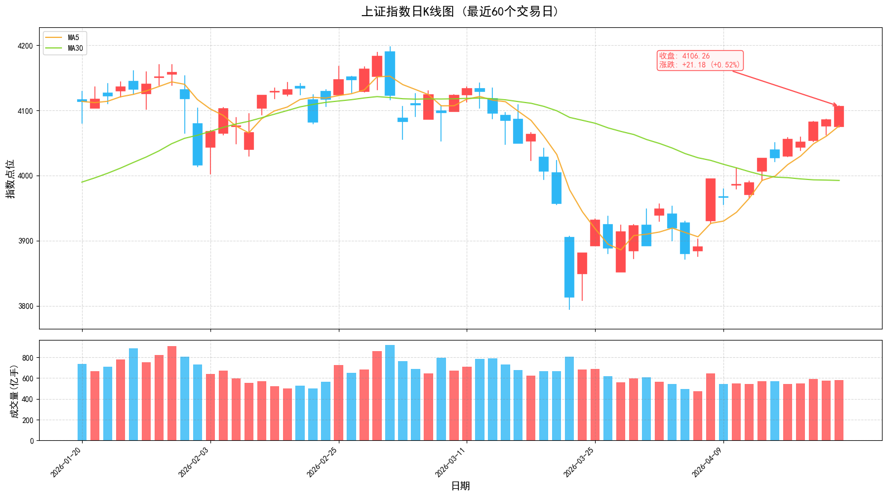

2026年4月23日 | 周四
沪指五连阳重返4100点，创业板指再创逾十年新高；中东停火协议延长，地缘风险边际影响递减；宁德时代发布多款新品电池，太空算力概念崛起；市场主线明确，聚焦商业航天、锂电池、AI算力等赛道。
周三（4月22日）A股三大指数低开高走集体收涨，上证指数实现五连阳，时隔一个多月重返4100点；创业板指大涨1.73%报3752.76点，再创逾十年新高。两市成交额维持高位，市场情绪高涨。
特朗普宣布延长停火期限，同时维持海上封锁。伊朗因图斯卡号事件拒绝参与谈判，双方对峙态势一度升级，但最终局势出现反转。中东乱局的边际效应呈现递减趋势，短期局势扰动难以改变A股中长期运行逻辑，资金避险情绪逐步消退。
宁德时代发布神行超充电池、麒麟凝聚态电池、钠新电池等多款新品，刷新行业技术纪录。新能源赛道进入"钠锂并行"新格局，为锂电池产业链带来新的增长动力，进一步巩固其主线地位。
引导资金正在太空算力赛道进行高低切布局，逐步减仓5G通信、光通信等高位方向，转而布局商业航天等低位标的。中国卫星、中国卫通等近20股涨停，中国卫星获主力资金净流入16.34亿元。目前资金布局尚处于试探阶段，持续性需后续量价关系验证。
中国证券投资基金业协会发布《基金管理公司绩效考核管理指引》，将三年以上中长期业绩权重提至80%，基金经理薪酬与业绩强挂钩，强制跟投与薪酬递延机制。此举培育长期稳定资金，减少市场波动，价值投资理念深化，高股息蓝筹与优质成长龙头更受青睐。
今年以来光纤行业呈现"产品量价齐升"景气态势，江苏某光纤企业一季度光纤产销量同比增长近5倍。G.657.A2光纤去年每芯公里仅32元，今年涨至240元，涨幅达650%。中天科技获主力资金净流入15.24亿元，CPO/光通信概念掀涨停潮。
北向资金成交额持续维持高位，外资对中国资产关注度提升。成交前三：工业富联、紫金矿业、亨通光电。

指数五连阳重返4100点，可继续持有。关注MA5支撑，跌破则降低仓位。创业板指强势，可适当配置成长股。
关注商业航天、锂电池、CPO等热点板块。避免追高，等待回调至MA5附近介入。聚焦一季报业绩超预期品种。
本报告仅供参考，不构成投资建议。市场有风险，投资需谨慎。关注中东局势进展、美联储利率决议、一季报业绩披露等对市场的影响。
A股日报 | 数据来源：东方财富、同花顺、证监会官网
2026年4月23日